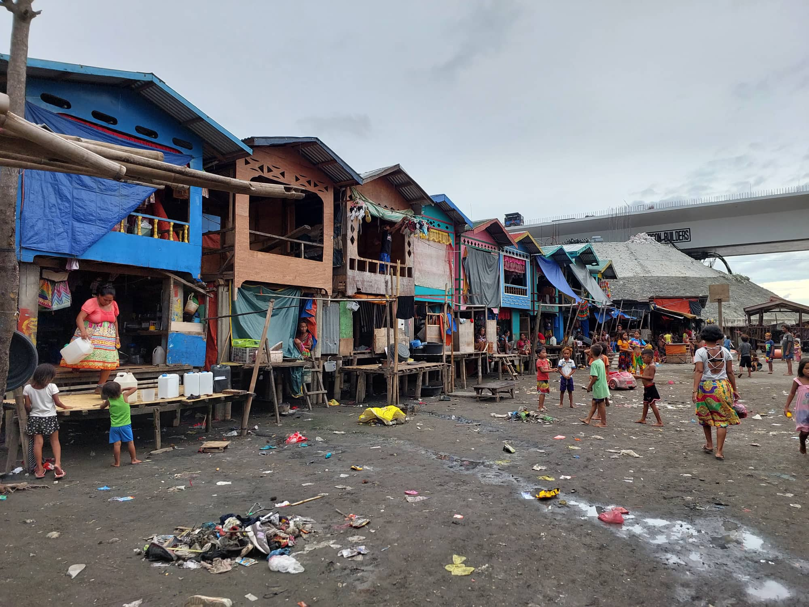

What is "The Badjao Community?"
Badjao are known as “Sea Gypsies” or Sea Nomads”. They are an ethnic group found along the shores of Mindanao, Borneo, Celebes and Indonesia. A majority of the Badjaos practice Islam. They are recognized for their artistically-woven, colorful sails. The Badjaos lived in stilt-houses along the coastlines. Originally they live off the sea by trading and fishing. Today, the Badjaos have scattered all throughout the country. In Davao City, Badjaos, have been spotted asking for alms along the city’s busy streets. Some of them have engaged in buying and selling of pre-loved and imitation shoes. Some of the Badjao have start to form communities along the shores. On of these communities is the Badjao Community Association of Matina Aplaya Inc.
Institution's Mission

The group was founded to set an example for the badjao community's residents. Along the coastline, they take part in environmental restoration and preservation. They advocate various livelihood activities among their members as a community. They also carry out adult and preschooler literacy programs. The neighborhood also organizes and supports training for the growth and maintenance of its cultural heritage.
Institution's History
The driving point that led to the creation of the institution was the living conditions the Badjao community immensely suffered from. Firstly, the state of the environment is poor, sometimes the wastes aren’t properly disposed of. Secondly, adding fuel to fire, the lockdown struck them hard, and a lot of their members lost their businesses due to having to sell them in hopes of affording their primary needs. At this moment, sadly many Badjaos are spotted asking for alms in the busy streets of Davao City.
Organizer

The institution was founded by Pastor Felicisimo “Jun” Morales. Pastor Jun, together with his wife, lived with the Badjao in Isla Verde for more than 8 years.The institution was established to become a model among the populace of the badjao community. The association started with roughly 35 families.Now there are more than 500 members of the community.
Beneficiaries
The reason why people have been admitted to this association was intending to help out the Badjao community. They have done multiple activities to help the community such as teach the illiterate and support their culture.
Benefactors
The association started with the guidance of Pastor Felicisimo “Jun” Morales along with his wife. Also, the members of the community are supportive. And other existing organizations such as BAMAI (Badjau of Matina Aplaya Incorporation) and of course Ateneo.